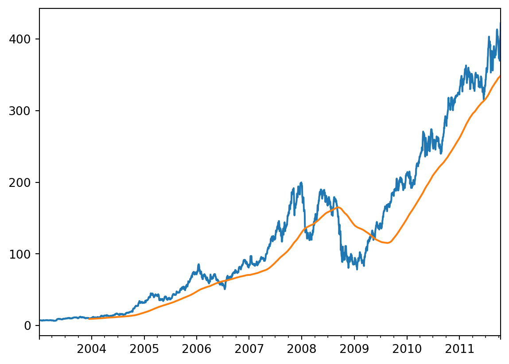
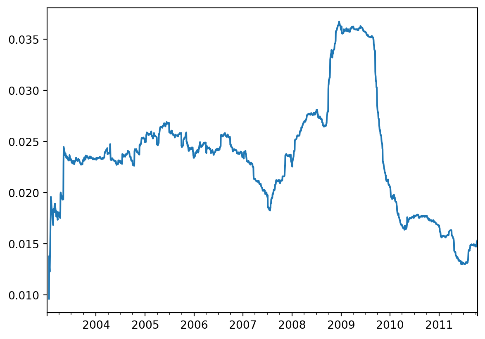
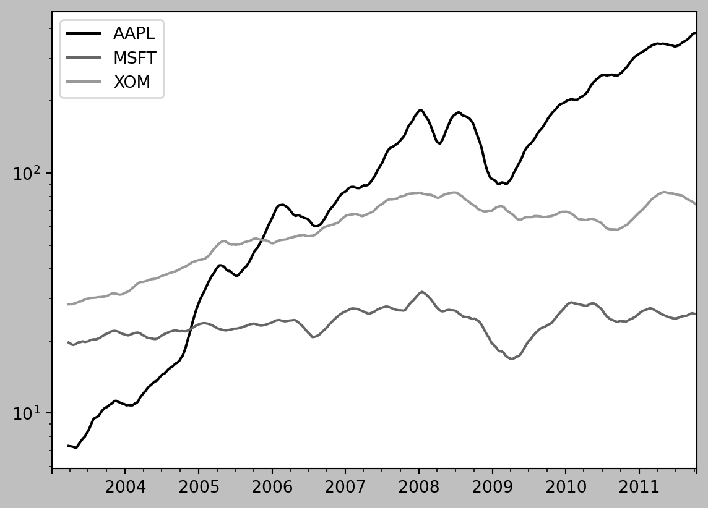
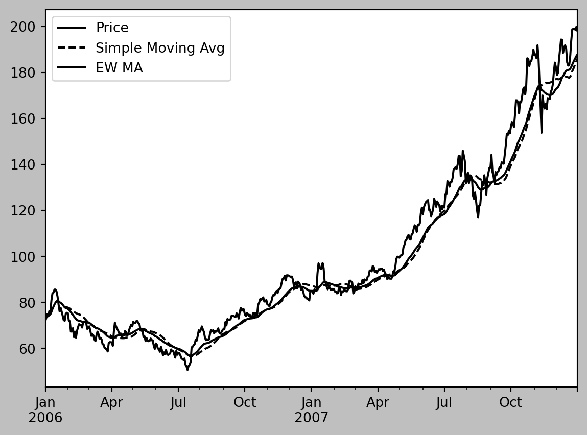
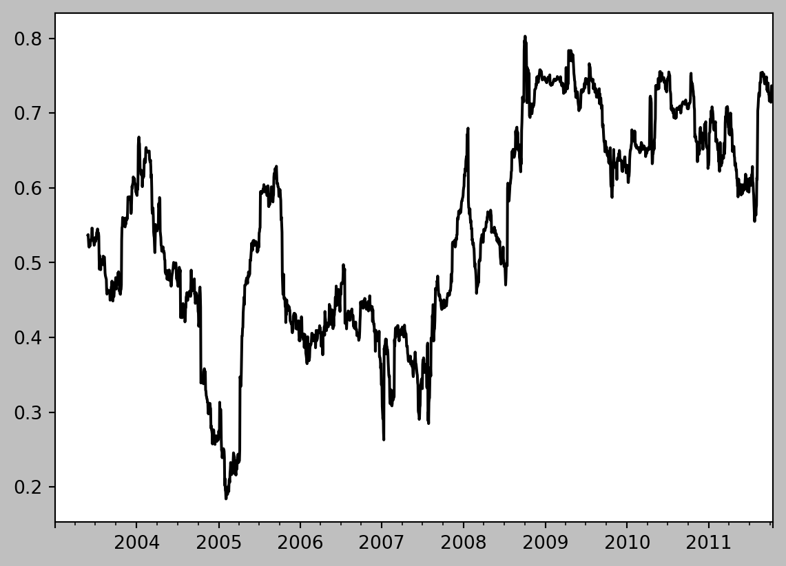
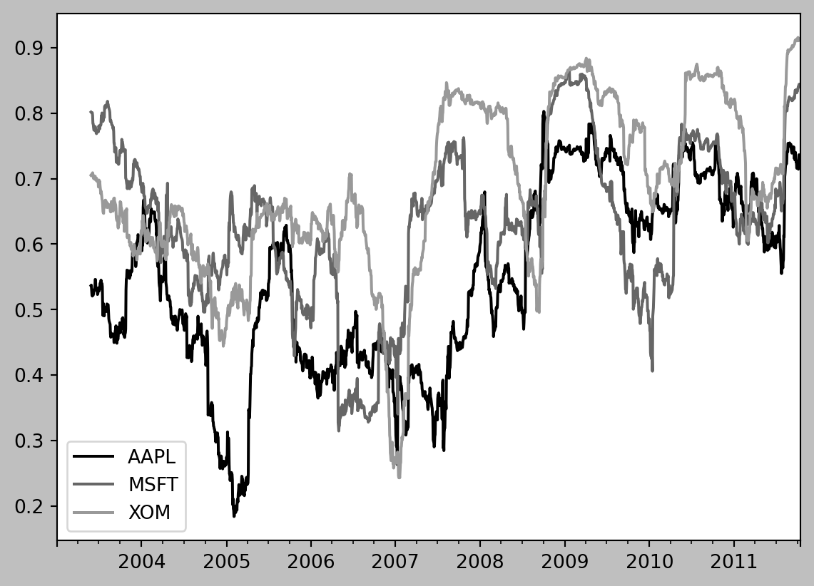
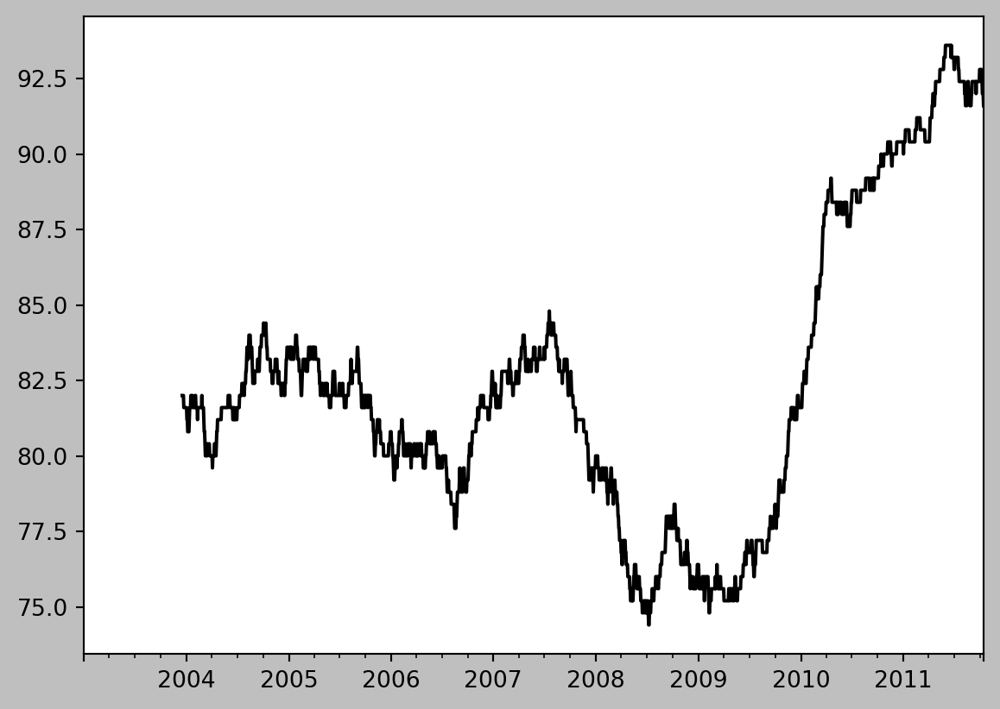

# SETUP (提供的代码 - 需要放在 notebook 的顶部)
import numpy as np # 导入 NumPy 库，用于数值计算，并简写为 np
import pandas as pd # 导入 pandas 库，用于数据分析，并简写为 pd
from datetime import datetime, timedelta # 从 datetime 模块导入 datetime 和 timedelta 类
import pytz # 导入 pytz 库，用于处理时区
from pandas.tseries.offsets import Hour, Minute, Day, MonthEnd # 从 pandas 导入时间偏移对象
# 为了演示，在此特定 notebook 中抑制 FutureWarnings
import warnings # 导入 warnings 模块
warnings.simplefilter(action='ignore', category=FutureWarning) # 忽略 FutureWarnings
# 用于绘图
import matplotlib.pyplot as plt # 导入 matplotlib.pyplot 模块，用于绘图，并简写为 pltPython 数据分析
第 11 章 时间序列
时间序列数据简介
时间序列数据是按时间间隔收集的一系列数据点。⏱️ 它在各个领域都是至关重要的数据类型：
- 金融: 股票价格、交易量、利率 💰
- 经济: GDP、通货膨胀率、失业率 📈
- 生态: 种群规模、温度变化 🌡️
- 神经科学: 脑电波活动、神经信号 🧠
- 物理: 运动、速度、加速度 🚀
本质上，任何随时间重复记录的内容都构成时间序列。
时间序列数据的类型
时间序列数据可以根据数据点相对于时间的度量方式进行分类：
- 时间戳 (Timestamps): 时间上的特定时刻 (例如，2024-10-27 09:30:00)。
- 固定周期 (Fixed Periods): 表示整个持续时间 (例如，2017 年 1 月，2020 年)。
- 时间间隔 (Intervals of Time): 由开始和结束时间戳指示 (例如，从下午 2:00 到 2:30 的用户会话)。
- 实验或经过时间 (Experiment or Elapsed Time): 相对于起始点的时间 (例如，饼干放入烤箱后的秒数)。
本章主要关注前三种类型 (时间戳、固定周期和时间间隔)。
时间序列：规则与不规则
时间序列也可以是：
- 固定频率 (规则): 数据点以固定的时间间隔出现 (例如，每 15 秒、每 5 分钟、每月)。🗓️
- 不规则: 数据点不遵循固定的时间单位 (例如，网站访问的时间戳)。🚶
表示方式的选择取决于具体的应用。
pandas 中的时间序列
pandas 是一个强大的 Python 库，为时间序列分析提供了广泛的工具。它允许你：
- 高效处理大型时间序列。🗂️
- 切片、切块和聚合数据。🔪
- 对不规则和固定频率的时间序列进行重采样。🔄
- 处理缺失数据。❓
这些功能对于金融和经济应用至关重要，但它们同样适用于分析各种数据集，如服务器日志。
导入必要的库
在深入研究时间序列操作之前，让我们导入必要的库：用于数值运算的 NumPy 和用于数据分析的 pandas。
import numpy as np # 导入 NumPy 库，用于数值计算
import pandas as pd # 导入 pandas 库，用于数据分析日期和时间数据类型及工具
Python 的标准库提供了用于处理日期和时间的模块：
datetime: 提供用于操作日期和时间的类 (例如，datetime、date、time、timedelta)。time: 提供与时间相关的函数。calendar: 与日历相关的函数。
datetime.datetime 类型 (或简称为 datetime) 是常用的。
datetime 对象
让我们创建一个 datetime 对象来表示当前时间：
from datetime import datetime # 从 datetime 模块导入 datetime 类
now = datetime.now() # 获取当前日期和时间
print(now) # 打印当前日期和时间2025-02-19 14:22:41.543917此代码片段检索当前日期和时间。
datetime 对象 (续)
我们也可以手动构建一个 datetime 对象：
from datetime import datetime # 确保导入了 datetime 类
my_date = datetime(2024, 10, 27, 10, 30, 0) # 年、月、日、时、分、秒
print(my_date) # 打印手动创建的 datetime 对象2024-10-27 10:30:00访问各个组成部分：
from datetime import datetime # 确保导入了datetime
now = datetime.now() # 获取当前日期和时间
print(f"Year: {now.year}, Month: {now.month}, Day: {now.day}") # 打印年、月、日Year: 2025, Month: 2, Day: 19timedelta 对象
timedelta 对象表示两个 datetime 对象之间的差：
from datetime import datetime # 确保导入了 datetime
delta = datetime(2011, 1, 7) - datetime(2008, 6, 24, 8, 15) # 计算两个 datetime 对象之间的差
print(delta) # 打印时间差
print(f"Days: {delta.days}, Seconds: {delta.seconds}") # 打印天数和秒数926 days, 15:45:00
Days: 926, Seconds: 56700timedelta 对象 (续)
delta.days: 返回相差的天数。delta.seconds: 返回相差的秒数 (在最后一天内)。它不包括包含在days差异中的秒数。
timedelta 对象 (续)
您可以将 timedelta 对象与 datetime 对象相加或相减：
from datetime import datetime, timedelta # 确保导入了 datetime 和 timedelta
start = datetime(2011, 1, 7) # 创建一个 datetime 对象
print(start + timedelta(12)) # 加上 12 天
print(start - 2 * timedelta(12)) # 减去 24 天2011-01-19 00:00:00
2010-12-14 00:00:00datetime 模块中的类型
| 类型 | 描述 |
|---|---|
date |
存储日历日期 (年、月、日)。 |
time |
存储一天中的时间 (小时、分钟、秒、微秒)。 |
datetime |
同时存储日期和时间。 |
timedelta |
表示两个 datetime 值之间的差。 |
tzinfo |
用于存储时区信息的基类型。 |
字符串和 Datetime 之间的转换
strftime(): 将datetime对象格式化为字符串。strptime(): 将字符串解析为datetime对象。pd.to_datetime(): 在 pandas 中将字符串转换为 DatetimeIndex。
from datetime import datetime # 确保导入了 datetime
stamp = datetime(2011, 1, 3) # 创建一个 datetime 对象
# datetime to string
print(str(stamp)) # 将 datetime 对象转换为字符串 (使用默认格式)
print(stamp.strftime('%Y-%m-%d')) # 使用 strftime() 格式化日期 (年-月-日)2011-01-03 00:00:00
2011-01-03字符串和 Datetime 之间的转换 (续)
from datetime import datetime # 确保导入了 datetime
# string to datetime
value = '2011-01-03' # 定义一个日期字符串
print(datetime.strptime(value, '%Y-%m-%d')) # 使用 strptime() 将字符串解析为 datetime 对象
datestrs = ['7/6/2011', '8/6/2011'] # 定义一个日期字符串列表
dt_list = [datetime.strptime(x, '%m/%d/%Y') for x in datestrs] # 列表推导式，将字符串列表转换为 datetime 对象列表
print(dt_list) # 打印 datetime 对象列表2011-01-03 00:00:00
[datetime.datetime(2011, 7, 6, 0, 0), datetime.datetime(2011, 8, 6, 0, 0)]常用 strftime 和 strptime 格式代码
代码 | 描述 |
: | :- |
: | :- |
%Y | 4 位数的年份 |%y | 2 位数的年份 |%m | 2 位数的月份 [01, 12] |%d | 2 位数的日期 [01, 31] |%H | 小时 (24 小时制) [00, 23] |%I | 小时 (12 小时制) [01, 12] |%M | 2 位数的分钟 [00, 59] |%S | 秒 [00, 61] (60 和 61 用于闰秒) |%f | 微秒，整数，零填充 (从 000000 到 999999) |%j | 一年中的第几天，零填充整数 (从 001 到 366) |更多 strftime 和 strptime 格式代码
代码 | 描述 |
:- | : |
:- | : |
%w | 星期几，整数 [0 (星期日), 6] |%u | 星期几，从 1 开始的整数，1 代表星期一。 |%U | 一年中的周数 [00, 53]; 星期日是第一天，第一个星期日之前的日子是 “第 0 周” |%W | 一年中的周数 [00, 53]; 星期一被认为是每周的第一天，一年中第一个星期一之前的日子是 “第 0 周” |%z | UTC 时区偏移量，+HHMM 或 -HHMM; 如果是 naive 则为空 ||%Z |时区名称作为字符串，如果没有时区，则为空字符串 | | %F | %Y-%m-%d 的快捷方式 (例如，2012-4-18) | | %D | %m/%d/%y 的快捷方式 (例如，04/18/12) |
pandas 中的 pd.to_datetime()
pandas 专为处理日期数组而设计。pd.to_datetime() 方法非常通用：
import pandas as pd # 确保导入了 pandas
datestrs = ['2011-07-06 12:00:00', '2011-08-06 00:00:00'] # 定义一个日期字符串列表
dt_index = pd.to_datetime(datestrs) # 使用 pd.to_datetime() 将字符串列表转换为 DatetimeIndex
print(dt_index) # 打印 DatetimeIndexDatetimeIndex(['2011-07-06 12:00:00', '2011-08-06 00:00:00'], dtype='datetime64[ns]', freq=None)pandas 中的 pd.to_datetime() (续)
它会自动处理各种日期格式，还可以识别缺失值：
import pandas as pd # 确保导入了 pandas
idx = pd.to_datetime(datestrs + [None]) # 将包含 None 的列表转换为 DatetimeIndex
print(idx) # 打印 DatetimeIndex
print(idx[2]) # NaT (Not a Time) # 打印第三个元素 (NaT)
print(pd.isna(idx)) # 检查 DatetimeIndex 中的缺失值 (NaT)DatetimeIndex(['2011-07-06 12:00:00', '2011-08-06 00:00:00', 'NaT'], dtype='datetime64[ns]', freq=None)
NaT
[False False True]NaT 是 pandas 中表示空时间戳的方式。
特定于区域设置的日期格式
datetime 对象具有特定于区域设置的格式化选项。
类型 | 描述 |
: | :- |
: | :- |
%a | 缩写的星期几名称。 |%A | 完整的星期几名称。 |%b | 缩写的月份名称。 |%B | 完整的月份名称。 |%c | 完整的日期和时间 (例如，‘Tue 01 May 2012 04:20:57 PM’)。 |%p | 区域设置中相当于 AM 或 PM 的值。 |%x | 区域设置的格式化日期 (例如，在美国，2012 年 5 月 1 日会产生 ‘05/01/2012’)。 |%X | 区域设置的时间 (例如，‘04:24:12 PM’)。 |pandas 中的时间序列基础
pandas 中一个基本的时间序列对象是一个以时间戳为索引的 Series：
import numpy as np # 导入 NumPy
import pandas as pd # 导入 pandas
from datetime import datetime # 导入 datetime
dates = [datetime(2011, 1, 2), datetime(2011, 1, 5),
datetime(2011, 1, 7), datetime(2011, 1, 8),
datetime(2011, 1, 10), datetime(2011, 1, 12)] # 创建一个 datetime 对象列表
ts = pd.Series(np.random.randn(6), index=dates) # 创建一个 Series，以 datetime 对象列表作为索引
print(ts) # 打印时间序列
print(type(ts)) # 打印 ts 的类型2011-01-02 2.248023
2011-01-05 -0.834554
2011-01-07 1.952121
2011-01-08 -0.192165
2011-01-10 0.235019
2011-01-12 -0.756355
dtype: float64
<class 'pandas.core.series.Series'>- 索引是一个
DatetimeIndex。
pandas 中的时间序列基础 (续)
不同索引的时间序列之间的算术运算会自动按日期对齐。
import numpy as np # 导入 NumPy
import pandas as pd # 导入 pandas
from datetime import datetime # 导入 datetime
dates = [datetime(2011, 1, 2), datetime(2011, 1, 5),
datetime(2011, 1, 7), datetime(2011, 1, 8),
datetime(2011, 1, 10), datetime(2011, 1, 12)] # 创建一个 datetime 对象列表
ts = pd.Series(np.random.randn(6), index=dates) # 创建一个 Series，以 datetime 对象列表作为索引
print(ts.index) #打印时间序列的索引
print(ts + ts[::2]) # [::2] 选择每第二个元素。注意 NaN 值。DatetimeIndex(['2011-01-02', '2011-01-05', '2011-01-07', '2011-01-08',
'2011-01-10', '2011-01-12'],
dtype='datetime64[ns]', freq=None)
2011-01-02 -1.870274
2011-01-05 NaN
2011-01-07 -3.656685
2011-01-08 NaN
2011-01-10 -2.589724
2011-01-12 NaN
dtype: float64时间戳对象
DatetimeIndex 中的标量值是 pandas Timestamp 对象：
import numpy as np # 导入 NumPy
import pandas as pd # 导入 pandas
from datetime import datetime # 导入 datetime
dates = [datetime(2011, 1, 2), datetime(2011, 1, 5),
datetime(2011, 1, 7), datetime(2011, 1, 8),
datetime(2011, 1, 10), datetime(2011, 1, 12)] # 创建一个 datetime 对象列表
ts = pd.Series(np.random.randn(6), index=dates) # 创建一个 Series，以 datetime 对象列表作为索引
stamp = ts.index[0] #获取时间序列索引的第一个值
print(stamp) #打印这个值
print(type(stamp)) #打印值的类型2011-01-02 00:00:00
<class 'pandas._libs.tslibs.timestamps.Timestamp'>pandas.Timestamp 可以在大多数使用 datetime 对象的地方使用。
索引、选择和子集
您可以使用各种方式使用标签 (日期) 对时间序列进行索引：
import numpy as np # 导入 NumPy
import pandas as pd # 导入 pandas
from datetime import datetime # 导入 datetime
dates = [datetime(2011, 1, 2), datetime(2011, 1, 5),
datetime(2011, 1, 7), datetime(2011, 1, 8),
datetime(2011, 1, 10), datetime(2011, 1, 12)] # 创建一个 datetime 对象列表
ts = pd.Series(np.random.randn(6), index=dates) # 创建一个 Series，以 datetime 对象列表作为索引
stamp = ts.index[2] # 获取时间序列索引的第三个元素
print(ts[stamp]) # 使用时间戳索引
print(ts['2011-01-10']) # 使用日期字符串索引1.208828437989877
-0.12618985641649783索引、选择和子集 (续)
对于较长的时间序列，您可以使用年份或年月来选择切片：
import numpy as np # 导入 NumPy
import pandas as pd # 导入 pandas
longer_ts = pd.Series(np.random.randn(1000),
index=pd.date_range('1/1/2000', periods=1000)) # 创建一个较长的时间序列
print(longer_ts['2001']) # 选择 2001 年的所有数据
print(longer_ts['2001-05']) # 选择 2001 年 5 月的所有数据2001-01-01 0.778277
2001-01-02 -1.746666
2001-01-03 0.488165
2001-01-04 -0.970844
2001-01-05 -0.362200
...
2001-12-27 -0.888858
2001-12-28 -0.984452
2001-12-29 1.273428
2001-12-30 -1.143759
2001-12-31 -0.016393
Freq: D, Length: 365, dtype: float64
2001-05-01 -1.534476
2001-05-02 1.717477
2001-05-03 -1.068018
2001-05-04 -1.154015
2001-05-05 -0.201790
2001-05-06 0.118378
2001-05-07 -0.688098
2001-05-08 -0.164069
2001-05-09 -0.261402
2001-05-10 -0.617958
2001-05-11 -0.312088
2001-05-12 0.169424
2001-05-13 -0.635458
2001-05-14 1.361047
2001-05-15 -1.737481
2001-05-16 -1.996880
2001-05-17 -0.490516
2001-05-18 -0.328491
2001-05-19 -0.425433
2001-05-20 -0.096868
2001-05-21 -0.624496
2001-05-22 -0.619592
2001-05-23 1.015465
2001-05-24 0.908434
2001-05-25 -1.122352
2001-05-26 1.939164
2001-05-27 1.221890
2001-05-28 -0.054268
2001-05-29 1.045968
2001-05-30 0.413487
2001-05-31 0.893980
Freq: D, dtype: float64索引、选择和子集 (续)
使用 datetime 对象进行切片也有效，包括范围查询：
import numpy as np # 导入 NumPy
import pandas as pd # 导入 pandas
from datetime import datetime # 导入 datetime
dates = [datetime(2011, 1, 2), datetime(2011, 1, 5),
datetime(2011, 1, 7), datetime(2011, 1, 8),
datetime(2011, 1, 10), datetime(2011, 1, 12)] # 创建一个 datetime 对象列表
ts = pd.Series(np.random.randn(6), index=dates)
print(ts[datetime(2011, 1, 7):]) # 使用 datetime 对象进行切片 (范围查询)
print(ts['2011-01-06':'2011-01-11']) # 使用日期字符串进行切片 (范围查询)2011-01-07 0.962757
2011-01-08 0.009201
2011-01-10 -0.578818
2011-01-12 -1.134133
dtype: float64
2011-01-07 0.962757
2011-01-08 0.009201
2011-01-10 -0.578818
dtype: float64索引、选择和子集 (续)
truncate() 方法在两个日期之间对 Series 进行切片：
import numpy as np # 导入 NumPy
import pandas as pd # 导入 pandas
from datetime import datetime # 导入 datetime
dates = [datetime(2011, 1, 2), datetime(2011, 1, 5),
datetime(2011, 1, 7), datetime(2011, 1, 8),
datetime(2011, 1, 10), datetime(2011, 1, 12)] # 创建一个 datetime 对象列表
ts = pd.Series(np.random.randn(6), index=dates)
print(ts.truncate(after='2011-01-09')) # 在 2011-01-09 之后截断2011-01-02 1.080734
2011-01-05 -1.287651
2011-01-07 1.747145
2011-01-08 0.015727
dtype: float64索引、选择和子集 (续)
所有这些切片操作都适用于 DataFrame，在行上进行索引：
import numpy as np # 导入 NumPy
import pandas as pd # 导入 pandas
dates = pd.date_range('1/1/2000', periods=100, freq='W-WED') # 创建一个日期范围 (每周三)
long_df = pd.DataFrame(np.random.randn(100, 4),
index=dates,
columns=['Colorado', 'Texas', 'New York', 'Ohio']) # 创建一个 DataFrame
print(long_df.loc['2001-05']) # 使用 .loc 按标签选择 2001 年 5 月的所有行 Colorado Texas New York Ohio
2001-05-02 -1.639200 -1.360790 1.252533 1.779938
2001-05-09 1.048367 0.669613 0.097629 0.400700
2001-05-16 -0.935691 0.946895 0.766187 1.614594
2001-05-23 -1.598397 0.484545 0.847627 -0.585456
2001-05-30 0.965721 -0.938391 -0.426365 0.957039具有重复索引的时间序列
对于同一时间戳，可能存在多个数据观察值：
import numpy as np # 导入 NumPy
import pandas as pd # 导入 pandas
dates = pd.DatetimeIndex(['1/1/2000', '1/2/2000', '1/2/2000', '1/2/2000',
'1/3/2000']) # 创建一个具有重复日期的 DatetimeIndex
dup_ts = pd.Series(np.arange(5), index=dates) # 创建一个具有重复索引的 Series
print(dup_ts) # 打印 Series
print(dup_ts.index.is_unique) # 检查索引是否唯一2000-01-01 0
2000-01-02 1
2000-01-02 2
2000-01-02 3
2000-01-03 4
dtype: int64
False具有重复索引的时间序列 (续)
索引现在将产生标量值或切片：
import numpy as np # 导入 NumPy
import pandas as pd # 导入 pandas
dates = pd.DatetimeIndex(['1/1/2000', '1/2/2000', '1/2/2000', '1/2/2000',
'1/3/2000']) # 创建一个具有重复日期的 DatetimeIndex
dup_ts = pd.Series(np.arange(5), index=dates) # 创建一个具有重复索引的 Series
print(dup_ts['1/3/2000']) # 未重复的日期，返回标量值
print(dup_ts['1/2/2000']) # 重复的日期，返回切片4
2000-01-02 1
2000-01-02 2
2000-01-02 3
dtype: int64具有重复索引的时间序列 (续)
要聚合具有非唯一时间戳的数据，请使用 groupby 和 level=0：
import numpy as np # 导入 NumPy
import pandas as pd # 导入 pandas
dates = pd.DatetimeIndex(['1/1/2000', '1/2/2000', '1/2/2000', '1/2/2000',
'1/3/2000']) # 创建一个具有重复日期的 DatetimeIndex
dup_ts = pd.Series(np.arange(5), index=dates) # 创建一个具有重复索引的 Series
grouped = dup_ts.groupby(level=0) # 按索引级别 0 (日期) 分组
print(grouped.mean()) # 计算每个日期的平均值
print(grouped.count()) # 计算每个日期的计数2000-01-01 0.0
2000-01-02 2.0
2000-01-03 4.0
dtype: float64
2000-01-01 1
2000-01-02 3
2000-01-03 1
dtype: int64日期范围、频率和移位
生成日期范围
pandas.date_range() 用于生成具有特定长度和频率的 DatetimeIndex：
import pandas as pd # 导入 pandas
index = pd.date_range('2012-04-01', '2012-06-01') # 创建一个从 2012-04-01 到 2012-06-01 的每日日期范围
print(index) # 打印 DatetimeIndexDatetimeIndex(['2012-04-01', '2012-04-02', '2012-04-03', '2012-04-04',
'2012-04-05', '2012-04-06', '2012-04-07', '2012-04-08',
'2012-04-09', '2012-04-10', '2012-04-11', '2012-04-12',
'2012-04-13', '2012-04-14', '2012-04-15', '2012-04-16',
'2012-04-17', '2012-04-18', '2012-04-19', '2012-04-20',
'2012-04-21', '2012-04-22', '2012-04-23', '2012-04-24',
'2012-04-25', '2012-04-26', '2012-04-27', '2012-04-28',
'2012-04-29', '2012-04-30', '2012-05-01', '2012-05-02',
'2012-05-03', '2012-05-04', '2012-05-05', '2012-05-06',
'2012-05-07', '2012-05-08', '2012-05-09', '2012-05-10',
'2012-05-11', '2012-05-12', '2012-05-13', '2012-05-14',
'2012-05-15', '2012-05-16', '2012-05-17', '2012-05-18',
'2012-05-19', '2012-05-20', '2012-05-21', '2012-05-22',
'2012-05-23', '2012-05-24', '2012-05-25', '2012-05-26',
'2012-05-27', '2012-05-28', '2012-05-29', '2012-05-30',
'2012-05-31', '2012-06-01'],
dtype='datetime64[ns]', freq='D')生成日期范围(续)
默认情况下，date_range 生成每日时间戳。您可以指定开始或结束日期以及周期数：
import pandas as pd # 导入 pandas
print(pd.date_range(start='2012-04-01', periods=20)) # 从 2012-04-01 开始，生成 20 个每日日期
print(pd.date_range(end='2012-06-01', periods=20)) # 到 2012-06-01 结束，生成 20 个每日日期DatetimeIndex(['2012-04-01', '2012-04-02', '2012-04-03', '2012-04-04',
'2012-04-05', '2012-04-06', '2012-04-07', '2012-04-08',
'2012-04-09', '2012-04-10', '2012-04-11', '2012-04-12',
'2012-04-13', '2012-04-14', '2012-04-15', '2012-04-16',
'2012-04-17', '2012-04-18', '2012-04-19', '2012-04-20'],
dtype='datetime64[ns]', freq='D')
DatetimeIndex(['2012-05-13', '2012-05-14', '2012-05-15', '2012-05-16',
'2012-05-17', '2012-05-18', '2012-05-19', '2012-05-20',
'2012-05-21', '2012-05-22', '2012-05-23', '2012-05-24',
'2012-05-25', '2012-05-26', '2012-05-27', '2012-05-28',
'2012-05-29', '2012-05-30', '2012-05-31', '2012-06-01'],
dtype='datetime64[ns]', freq='D')生成日期范围(续)
您还可以指定频率。例如，获取每个月的最后一个工作日：
import pandas as pd # 导入 pandas
print(pd.date_range('2000-01-01', '2000-12-01', freq='BM')) # 'BM' = Business Month end (每月最后一个工作日)DatetimeIndex(['2000-01-31', '2000-02-29', '2000-03-31', '2000-04-28',
'2000-05-31', '2000-06-30', '2000-07-31', '2000-08-31',
'2000-09-29', '2000-10-31', '2000-11-30'],
dtype='datetime64[ns]', freq='BME')频率和日期偏移
pandas 中的频率由基本频率和乘数组成。基本频率通常是字符串别名 (例如，‘M’ 表示每月，‘H’ 表示每小时)。
| 别名 | 偏移类型 | 描述 |
|---|---|---|
D |
Day |
日历日 |
B |
BusinessDay |
工作日 |
H |
Hour |
每小时 |
T 或 min |
Minute |
每分钟 |
S |
Second |
每秒 |
L 或 ms |
Milli |
毫秒 (1/1,000 秒) |
U |
Micro |
微秒 (1/1,000,000 秒) |
M |
MonthEnd |
每月最后一个日历日 |
频率和日期偏移(续)
| 别名 | 偏移类型 | 描述 |
|---|---|---|
BM |
BusinessMonthEnd |
每月最后一个工作日 |
MS |
MonthBegin |
每月第一个日历日 |
BMS |
BusinessMonthBegin |
每月第一个工作日 |
W-MON, W-TUE, … |
Week |
每周的指定星期几 (MON, TUE, WED, THU,FRI, SAT, or SUN) |
WOM-1MON, WOM-2MON, … |
WeekOfMonth |
生成每月第一、第二、第三或第四周的每周日期 (例如，WOM-3FRI 表示每月第三个星期五) |
频率和日期偏移(续)
| 别名 | 偏移类型 | 描述 |
|---|---|---|
Q-JAN, Q-FEB, … |
QuarterEnd |
季度日期锚定在每个月的最后一个日历日，年份以指定月份结束 (JAN, FEB,MAR, APR, MAY, JUN, JUL, AUG, SEP, OCT, NOV, or DEC) |
BQ-JAN, BQ-FEB, … |
BusinessQuarterEnd |
季度日期锚定在每个月的最后一个工作日，年份以指定月份结束 |
QS-JAN, QS-FEB, … |
QuarterBegin |
季度日期锚定在每个月的第一个日历日，年份以指定月份结束 |
BQS-JAN, BQS-FEB, … |
BusinessQuarterBegin |
季度日期锚定在每个月的第一个工作日，年份以指定月份结束 |
A-JAN, A-FEB, … |
YearEnd |
年度日期锚定在给定月份的最后一个日历日 (JAN, FEB, MAR, APR, MAY, JUN, JUL, AUG, SEP,OCT, NOV, or DEC) |
BA-JAN, BA-FEB, … |
BusinessYearEnd |
年度日期锚定在给定月份的最后一个工作日 |
AS-JAN, AS-FEB, … |
YearBegin |
年度日期锚定在给定月份的第一天 |
BAS-JAN, BAS-FEB, … |
BusinessYearBegin |
年度日期锚定在给定月份的第一个工作日 |
频率和日期偏移 - 示例
import pandas as pd # 导入 pandas
from pandas.tseries.offsets import Hour, Minute # 导入 Hour 和 Minute 偏移
print(Hour()) # 默认 1 小时
print(Hour(4)) # 4 小时
print(pd.date_range('2000-01-01', '2000-01-03 23:59', freq='4H')) # 每 4 小时<Hour>
<4 * Hours>
DatetimeIndex(['2000-01-01 00:00:00', '2000-01-01 04:00:00',
'2000-01-01 08:00:00', '2000-01-01 12:00:00',
'2000-01-01 16:00:00', '2000-01-01 20:00:00',
'2000-01-02 00:00:00', '2000-01-02 04:00:00',
'2000-01-02 08:00:00', '2000-01-02 12:00:00',
'2000-01-02 16:00:00', '2000-01-02 20:00:00',
'2000-01-03 00:00:00', '2000-01-03 04:00:00',
'2000-01-03 08:00:00', '2000-01-03 12:00:00',
'2000-01-03 16:00:00', '2000-01-03 20:00:00'],
dtype='datetime64[ns]', freq='4h')频率和日期偏移 - 示例(续)
import pandas as pd # 导入 pandas
from pandas.tseries.offsets import Hour, Minute # 导入 Hour 和 Minute
print(Hour(2) + Minute(30)) # 2 小时 30 分钟
print(pd.date_range('2000-01-01', periods=10, freq='1h30min')) # 每 1 小时 30 分钟<150 * Minutes>
DatetimeIndex(['2000-01-01 00:00:00', '2000-01-01 01:30:00',
'2000-01-01 03:00:00', '2000-01-01 04:30:00',
'2000-01-01 06:00:00', '2000-01-01 07:30:00',
'2000-01-01 09:00:00', '2000-01-01 10:30:00',
'2000-01-01 12:00:00', '2000-01-01 13:30:00'],
dtype='datetime64[ns]', freq='90min')频率和日期偏移 - “Week of Month”
import pandas as pd # 导入 pandas
rng = pd.date_range('2012-01-01', '2012-09-01', freq='WOM-3FRI') # 每月第三个星期五
print(list(rng)) # 打印日期列表[Timestamp('2012-01-20 00:00:00'), Timestamp('2012-02-17 00:00:00'), Timestamp('2012-03-16 00:00:00'), Timestamp('2012-04-20 00:00:00'), Timestamp('2012-05-18 00:00:00'), Timestamp('2012-06-15 00:00:00'), Timestamp('2012-07-20 00:00:00'), Timestamp('2012-08-17 00:00:00')]移位 (超前和滞后) 数据
移位将数据在时间上向后或向前移动。使用 shift() 方法：
import numpy as np # 导入 NumPy
import pandas as pd # 导入 pandas
ts = pd.Series(np.random.randn(4),
index=pd.date_range('1/1/2000', periods=4, freq='M')) # 创建一个时间序列 (每月)
print(ts) # 打印原始时间序列
print(ts.shift(2)) # 向后移动 2 个周期 (滞后)
print(ts.shift(-2)) # 向前移动 2 个周期 (超前)2000-01-31 -1.775190
2000-02-29 1.644746
2000-03-31 -0.828214
2000-04-30 -0.799291
Freq: ME, dtype: float64
2000-01-31 NaN
2000-02-29 NaN
2000-03-31 -1.775190
2000-04-30 1.644746
Freq: ME, dtype: float64
2000-01-31 -0.828214
2000-02-29 -0.799291
2000-03-31 NaN
2000-04-30 NaN
Freq: ME, dtype: float64移位 (超前和滞后) 数据 (续)
一个常见的用途是计算百分比变化：
import numpy as np # 导入 NumPy
import pandas as pd # 导入 pandas
ts = pd.Series(np.random.randn(4),
index=pd.date_range('1/1/2000', periods=4, freq='M')) # 创建一个时间序列 (每月)
print(ts / ts.shift(1) - 1) # 计算百分比变化2000-01-31 NaN
2000-02-29 3.472842
2000-03-31 -2.084910
2000-04-30 -0.520555
Freq: ME, dtype: float64移位 (超前和滞后) 数据 (续)
您还可以移动时间戳，保持数据不变：
import numpy as np # 导入 NumPy
import pandas as pd # 导入 pandas
ts = pd.Series(np.random.randn(4),
index=pd.date_range('1/1/2000', periods=4, freq='M')) # 创建一个时间序列 (每月)
print(ts.shift(2, freq='M')) # 将时间戳向后移动 2 个月
print(ts.shift(3, freq='D')) # 将时间戳向后移动 3 天
print(ts.shift(1, freq='90T')) # 将时间戳向后移动 90 分钟 ('T' 表示分钟)2000-03-31 1.545804
2000-04-30 -0.087442
2000-05-31 -0.070348
2000-06-30 -2.808519
Freq: ME, dtype: float64
2000-02-03 1.545804
2000-03-03 -0.087442
2000-04-03 -0.070348
2000-05-03 -2.808519
dtype: float64
2000-01-31 01:30:00 1.545804
2000-02-29 01:30:00 -0.087442
2000-03-31 01:30:00 -0.070348
2000-04-30 01:30:00 -2.808519
dtype: float64使用偏移量移动日期
pandas 日期偏移量可以与 datetime 或 Timestamp 对象一起使用：
import pandas as pd # 导入 pandas
from datetime import datetime # 导入 datetime
from pandas.tseries.offsets import Day, MonthEnd # 导入 Day 和 MonthEnd 偏移
now = datetime(2011, 11, 17) # 创建一个 datetime 对象
print(now + 3 * Day()) # 加上 3 天
print(now + MonthEnd()) # 滚动到月底
print(now + MonthEnd(2)) # 滚动到下个月底2011-11-20 00:00:00
2011-11-30 00:00:00
2011-12-31 00:00:00使用偏移量移动日期(续)
import pandas as pd # 导入 pandas
from datetime import datetime # 导入 datetime
from pandas.tseries.offsets import MonthEnd # 导入 MonthEnd 偏移
now = datetime(2011, 11, 17) # 创建一个 datetime 对象
offset = MonthEnd() # 创建 MonthEnd 偏移对象
print(offset.rollforward(now)) # 显式向前滚动
print(offset.rollback(now)) # 显式向后滚动2011-11-30 00:00:00
2011-10-31 00:00:00使用偏移量移动日期(续)
将日期偏移量与 groupby 结合使用的一种巧妙方法是 “滚动” 日期：
import numpy as np # 导入 NumPy
import pandas as pd # 导入 pandas
from pandas.tseries.offsets import MonthEnd # 导入 MonthEnd
ts = pd.Series(np.random.randn(20),
index=pd.date_range('1/15/2000', periods=20, freq='4D')) # 创建一个时间序列 (每 4 天)
print(ts.groupby(MonthEnd().rollforward).mean()) # 按月底分组并计算平均值
print(ts.resample('M').mean()) # 等效，且速度更快 (按月重采样)2000-01-31 0.397156
2000-02-29 0.184932
2000-03-31 -0.481613
dtype: float64
2000-01-31 0.397156
2000-02-29 0.184932
2000-03-31 -0.481613
Freq: ME, dtype: float64时区处理
处理时区可能很复杂。pandas 使用 pytz 库。默认情况下，pandas 中的时间序列是时区朴素的(没有时区信息)。
import pytz # 导入 pytz
print(pytz.common_timezones[-5:]) # 打印最后 5 个常见时区
tz = pytz.timezone('America/New_York') # 获取纽约时区
print(tz) # 打印时区对象['US/Eastern', 'US/Hawaii', 'US/Mountain', 'US/Pacific', 'UTC']
America/New_York时区本地化和转换
import numpy as np # 导入 NumPy
import pandas as pd # 导入 pandas
dates = pd.date_range('3/9/2012 9:30', periods=6, freq='D') # 创建一个日期范围 (每日)
ts = pd.Series(np.random.randn(len(dates)), index=dates) # 创建一个时间序列
print(ts) # 打印时间序列
print(ts.index.tz) # 时区朴素 (None)2012-03-09 09:30:00 -0.146057
2012-03-10 09:30:00 -0.814732
2012-03-11 09:30:00 -0.179495
2012-03-12 09:30:00 -0.628043
2012-03-13 09:30:00 -1.259515
2012-03-14 09:30:00 -0.067669
Freq: D, dtype: float64
None时区本地化和转换(续)
import pandas as pd # 导入 pandas
# 生成一个带有时区的时间范围
date_rng = pd.date_range('3/9/2012 9:30', periods=10, freq='D', tz='UTC') # 创建一个带有时区 (UTC) 的日期范围
print(date_rng.tz) # 打印时区
# 本地化到时区。
ts_utc = ts.tz_localize('UTC') # 将时间序列本地化到 UTC
print(ts_utc) # 打印本地化后的时间序列
print(ts_utc.index) # 打印带有时区的索引UTC
2012-03-09 09:30:00+00:00 -0.146057
2012-03-10 09:30:00+00:00 -0.814732
2012-03-11 09:30:00+00:00 -0.179495
2012-03-12 09:30:00+00:00 -0.628043
2012-03-13 09:30:00+00:00 -1.259515
2012-03-14 09:30:00+00:00 -0.067669
Freq: D, dtype: float64
DatetimeIndex(['2012-03-09 09:30:00+00:00', '2012-03-10 09:30:00+00:00',
'2012-03-11 09:30:00+00:00', '2012-03-12 09:30:00+00:00',
'2012-03-13 09:30:00+00:00', '2012-03-14 09:30:00+00:00'],
dtype='datetime64[ns, UTC]', freq='D')时区本地化和转换(续)
import numpy as np # 导入 NumPy
import pandas as pd # 导入 pandas
dates = pd.date_range('3/9/2012 9:30', periods=6, freq='D') # 创建一个日期范围 (每日)
ts = pd.Series(np.random.randn(len(dates)), index=dates) # 创建一个时间序列
ts_utc = ts.tz_localize('UTC') # 将时间序列本地化到 UTC
# 转换为另一个时区。
ts_eastern = ts_utc.tz_convert('America/New_York') # 将时间序列转换为纽约时区
print(ts_eastern) # 打印转换后的时间序列2012-03-09 04:30:00-05:00 -0.730074
2012-03-10 04:30:00-05:00 -0.393134
2012-03-11 05:30:00-04:00 0.661329
2012-03-12 05:30:00-04:00 0.566687
2012-03-13 05:30:00-04:00 1.084561
2012-03-14 05:30:00-04:00 -1.141792
Freq: D, dtype: float64使用带有时区意识的 Timestamp 对象进行操作
Timestamp 对象也支持时区本地化和转换：
import pandas as pd # 导入 pandas
stamp = pd.Timestamp('2011-03-12 04:00') # 创建一个 Timestamp 对象
stamp_utc = stamp.tz_localize('utc') # 本地化到 UTC
print(stamp_utc.tz_convert('America/New_York')) # 转换为纽约时区2011-03-11 23:00:00-05:00使用带有时区意识的 Timestamp 对象进行操作(续)
在不同时区之间执行操作时，结果将采用 UTC。
import numpy as np # 导入 NumPy
import pandas as pd # 导入 pandas
dates = pd.date_range('3/7/2012 9:30', periods=10, freq='B') # 创建一个日期范围 (工作日)
ts = pd.Series(np.random.randn(len(dates)), index=dates) # 创建一个时间序列
ts1 = ts[:7].tz_localize('Europe/London') # 本地化到伦敦时区
ts2 = ts1[2:].tz_convert('Europe/Moscow') # 转换为莫斯科时区
result = ts1 + ts2 # 不同时区的时间序列相加
print(result.index) # 结果的索引将是 UTCDatetimeIndex(['2012-03-07 09:30:00+00:00', '2012-03-08 09:30:00+00:00',
'2012-03-09 09:30:00+00:00', '2012-03-12 09:30:00+00:00',
'2012-03-13 09:30:00+00:00', '2012-03-14 09:30:00+00:00',
'2012-03-15 09:30:00+00:00'],
dtype='datetime64[ns, UTC]', freq=None)周期和周期算术
周期 (Periods) 表示时间跨度 (例如，天、月、季度、年)。Period 类：
import pandas as pd # 导入 pandas
p = pd.Period(2011, freq='A-DEC') # 创建一个年度周期 (以 12 月结束)
print(p) # 打印周期
print(p + 5) # 加上 5 年
print(p - 2) # 减去 2 年
print(pd.Period('2014', freq='A-DEC') - p) # 计算两个周期之间的差 (年数)2011
2016
2009
<3 * YearEnds: month=12>周期和周期算术 (续)
period_range 创建周期的规则范围：
import numpy as np # 导入 NumPy
import pandas as pd # 导入 pandas
rng = pd.period_range('2000-01-01', '2000-06-30', freq='M') # 创建一个每月周期范围
print(rng) # 打印 PeriodIndex
print(pd.Series(np.random.randn(6), index=rng)) # 创建一个以 PeriodIndex 为索引的 SeriesPeriodIndex(['2000-01', '2000-02', '2000-03', '2000-04', '2000-05', '2000-06'], dtype='period[M]')
2000-01 1.779866
2000-02 1.738569
2000-03 -0.819227
2000-04 0.886658
2000-05 0.271296
2000-06 0.240180
Freq: M, dtype: float64周期和周期算术 (续)
import pandas as pd # 导入 pandas
values = ['2001Q3', '2002Q2', '2003Q1'] # 定义一个季度字符串列表
index = pd.PeriodIndex(values, freq='Q-DEC') # 从字符串列表创建一个 PeriodIndex (以 12 月结束的季度)
print(index) # 打印 PeriodIndexPeriodIndex(['2001Q3', '2002Q2', '2003Q1'], dtype='period[Q-DEC]')周期频率转换
可以使用 asfreq 转换周期和 PeriodIndex 对象：
import pandas as pd # 导入 pandas
p = pd.Period('2011', freq='A-DEC') # 创建一个年度周期 (以 12 月结束)
print(p.asfreq('M', how='start')) # 转换为每月周期 (开始)
print(p.asfreq('M', how='end')) # 转换为每月周期 (结束)
p = pd.Period('Aug-2011', 'M') # 创建一个月的周期
print(p.asfreq('A-JUN')) # 转换为以六月结束的年度周期2011-01
2011-12
2012周期频率转换(续)
import numpy as np # 导入 NumPy
import pandas as pd # 导入 pandas
periods = pd.period_range('2006', '2009', freq='A-DEC') # 创建一个年度周期范围 (以 12 月结束)
ts = pd.Series(np.random.randn(len(periods)), index=periods) # 创建一个以 PeriodIndex 为索引的 Series
print(ts.asfreq('M', how='start')) # 转换为每月周期 (开始)
print(ts.asfreq('B', how='end')) # 转换为工作日周期 (结束)2006-01 1.681827
2007-01 -0.195829
2008-01 0.273490
2009-01 -0.028402
Freq: M, dtype: float64
2006-12-29 1.681827
2007-12-31 -0.195829
2008-12-31 0.273490
2009-12-31 -0.028402
Freq: B, dtype: float64季度周期频率
季度数据在财务中很常见。pandas 支持季度频率 (Q-JAN 到 Q-DEC)：
import pandas as pd # 导入 pandas
#在财政年度于 1 月结束的情况下，2012Q4 的时间范围是从 2011 年 11 月到 2012 年 1 月
p = pd.Period('2012Q4', freq='Q-JAN') # 创建一个季度周期 (以 1 月结束)
print(p) # 打印周期
print(p.asfreq('D', how='start')) # 转换为每日周期 (开始)
print(p.asfreq('D', how='end')) # 转换为每日周期 (结束)2012Q4
2011-11-01
2012-01-31季度周期频率(续)
获取季度倒数第二个工作日下午 4 点的时间戳
import pandas as pd # 导入 pandas
p = pd.Period('2012Q4', freq='Q-JAN') # 创建一个季度周期 (以 1 月结束)
p4pm = (p.asfreq('B', 'e') - 1).asfreq('T', 's') + 16 * 60 #转换为交易日，取前一天。转换为分钟，取当天的开始时间。然后再加上16*60分钟
print(p4pm) # 打印周期
print(p4pm.to_timestamp()) # 转换为 Timestamp2012-01-30 16:00
2012-01-30 16:00:00季度周期频率(续)
使用 pandas.period_range 生成季度范围
import numpy as np # 导入 NumPy
import pandas as pd # 导入 pandas
periods = pd.period_range('2011Q3', '2012Q4', freq='Q-JAN') # 创建一个季度周期范围 (以 1 月结束)
ts = pd.Series(np.arange(len(periods)), index=periods) # 创建一个以 PeriodIndex 为索引的 Series
print(ts) # 打印时间序列
new_periods = (periods.asfreq('B', 'e') - 1).asfreq('H', 's') + 16 # 计算下午 4 点的时间戳
ts.index = new_periods.to_timestamp() # 将索引转换为 Timestamp
print(ts) # 打印转换后的时间序列2011Q3 0
2011Q4 1
2012Q1 2
2012Q2 3
2012Q3 4
2012Q4 5
Freq: Q-JAN, dtype: int64
2010-10-28 16:00:00 0
2011-01-28 16:00:00 1
2011-04-28 16:00:00 2
2011-07-28 16:00:00 3
2011-10-28 16:00:00 4
2012-01-30 16:00:00 5
dtype: int64将时间戳转换为周期 (及返回)
to_period() 将时间戳转换为周期：
import numpy as np # 导入 NumPy
import pandas as pd # 导入 pandas
dates = pd.date_range('1/1/2000', periods=3, freq='M') # 创建一个日期范围 (每月)
ts = pd.Series(np.random.randn(3), index=dates) # 创建一个以 DatetimeIndex 为索引的 Series
pts = ts.to_period() # 转换为 PeriodIndex
print(ts) # 打印原始时间序列
print(pts) # 打印转换为周期的时间序列2000-01-31 -1.938277
2000-02-29 0.065547
2000-03-31 -0.557196
Freq: ME, dtype: float64
2000-01 -1.938277
2000-02 0.065547
2000-03 -0.557196
Freq: M, dtype: float64将时间戳转换为周期 (及返回)(续)
import numpy as np # 导入 NumPy
import pandas as pd # 导入 pandas
dates = pd.date_range('1/29/2000', periods=6, freq='D') # 创建一个日期范围 (每日)
ts2 = pd.Series(np.random.randn(6), index=dates) # 创建一个以 DatetimeIndex 为索引的 Series
print(ts2.to_period('M')) # 转换为每月周期
print(ts2.to_period('M').to_timestamp(how='end')) # 转换回 Timestamp (月末)2000-01 -0.747664
2000-01 -0.073217
2000-01 0.699958
2000-02 -1.798177
2000-02 0.226364
2000-02 0.115551
Freq: M, dtype: float64
2000-01-31 23:59:59.999999999 -0.747664
2000-01-31 23:59:59.999999999 -0.073217
2000-01-31 23:59:59.999999999 0.699958
2000-02-29 23:59:59.999999999 -1.798177
2000-02-29 23:59:59.999999999 0.226364
2000-02-29 23:59:59.999999999 0.115551
dtype: float64从数组创建 PeriodIndex
您可以组合年份和季度列来创建 PeriodIndex：
import pandas as pd # 导入 pandas
data = pd.read_csv('examples/macrodata.csv') # 读取 CSV 文件
print(data.head(5)) # 打印前 5 行 year quarter realgdp realcons realinv realgovt realdpi cpi \
0 1959 1 2710.349 1707.4 286.898 470.045 1886.9 28.98
1 1959 2 2778.801 1733.7 310.859 481.301 1919.7 29.15
2 1959 3 2775.488 1751.8 289.226 491.260 1916.4 29.35
3 1959 4 2785.204 1753.7 299.356 484.052 1931.3 29.37
4 1960 1 2847.699 1770.5 331.722 462.199 1955.5 29.54
m1 tbilrate unemp pop infl realint
0 139.7 2.82 5.8 177.146 0.00 0.00
1 141.7 3.08 5.1 177.830 2.34 0.74
2 140.5 3.82 5.3 178.657 2.74 1.09
3 140.0 4.33 5.6 179.386 0.27 4.06
4 139.6 3.50 5.2 180.007 2.31 1.19 从数组创建 PeriodIndex (续)
import pandas as pd # 导入 pandas
data = pd.read_csv('examples/macrodata.csv') # 读取 CSV 文件
index = pd.PeriodIndex(year=data['year'], quarter=data['quarter'],freq='Q-DEC') # 从 year 和 quarter 列创建 PeriodIndex
data.index = index # 设置 DataFrame 的索引
print(data['infl'].head()) # 打印 'infl' 列的前几行1959Q1 0.00
1959Q2 2.34
1959Q3 2.74
1959Q4 0.27
1960Q1 2.31
Freq: Q-DEC, Name: infl, dtype: float64重采样和频率转换
重采样将时间序列从一个频率转换为另一个频率。
- 降采样: 将较高频率的数据聚合到较低频率 (例如，每日到每月)。
- 升采样: 将较低频率的数据转换为较高频率 (例如，每日到每小时)。
使用 resample() 方法。它类似于 groupby。
import numpy as np # 导入 NumPy
import pandas as pd # 导入 pandas
dates = pd.date_range('1/1/2000', periods=100, freq='D') # 创建一个日期范围 (每日)
ts = pd.Series(np.random.randn(len(dates)), index=dates) # 创建一个时间序列
print(ts.resample('M').mean()) # 每月平均值 (降采样)
print(ts.resample('M', kind='period').mean()) # 每月平均值 (降采样，使用周期)2000-01-31 -0.258972
2000-02-29 0.387736
2000-03-31 -0.116505
2000-04-30 0.097491
Freq: ME, dtype: float64
2000-01 -0.258972
2000-02 0.387736
2000-03 -0.116505
2000-04 0.097491
Freq: M, dtype: float64Resample 方法参数
参数 | 描述 |
: | :– |
: | :– |
rule | 字符串、DateOffset 或 timedelta，指示所需的重采样频率 (例如，‘M’、‘5min’ 或 Second(15)) |axis | 要重采样的轴；默认 axis=0 ||fill_method|升采样时如何插值，如 “ffill” 或 “bfill”；默认不插值| |closed|在降采样中，每个间隔的哪一端是闭合的 (包含的)，“right” 或 “left”|
Resample 方法参数(续)
参数 | 描述 |
: | :– |
: | :– |
|label|在降采样中，如何标记聚合结果，使用 “right” 或 “left” 箱边 (例如，9:30 到 9:35 的五分钟间隔可以标记为 9:30 或 9:35)| |limit|向前或向后填充时，要填充的最大周期数| |kind|聚合到周期 (“period”) 或时间戳 (“timestamp”)；默认为时间序列的索引类型| |convention|重采样周期时，将低频周期转换为高频周期的约定 (“start” 或 “end”)；默认为 “start”| |origin|用于确定重采样箱边缘的“基准”时间戳；也可以是“epoch”、“start”、“start_day”、“end”或“end_day”之一；有关完整详细信息，请参阅重采样文档字符串| |offset|添加到原点的偏移 timedelta；默认为 None|
降采样
import numpy as np # 导入 NumPy
import pandas as pd # 导入 pandas
dates = pd.date_range('1/1/2000', periods=12, freq='T') # 创建一个日期范围 (每分钟)
ts = pd.Series(np.arange(12), index=dates) # 创建一个时间序列
print(ts) # 打印原始时间序列
print(ts.resample('5min').sum()) # 每 5 分钟求和 (降采样)2000-01-01 00:00:00 0
2000-01-01 00:01:00 1
2000-01-01 00:02:00 2
2000-01-01 00:03:00 3
2000-01-01 00:04:00 4
2000-01-01 00:05:00 5
2000-01-01 00:06:00 6
2000-01-01 00:07:00 7
2000-01-01 00:08:00 8
2000-01-01 00:09:00 9
2000-01-01 00:10:00 10
2000-01-01 00:11:00 11
Freq: min, dtype: int64
2000-01-01 00:00:00 10
2000-01-01 00:05:00 35
2000-01-01 00:10:00 21
Freq: 5min, dtype: int64降采样(续)
import numpy as np # 导入 NumPy
import pandas as pd # 导入 pandas
dates = pd.date_range('1/1/2000', periods=12, freq='T') # 创建一个日期范围 (每分钟)
ts = pd.Series(np.arange(12), index=dates) # 创建一个时间序列
# closed='right', label='left'
print(ts.resample('5min', closed='right').sum()) # 每 5 分钟求和 (右闭合，左标签)
# closed='right', label='right'
print(ts.resample('5min', closed='right', label='right').sum()) # 每 5 分钟求和 (右闭合，右标签)1999-12-31 23:55:00 0
2000-01-01 00:00:00 15
2000-01-01 00:05:00 40
2000-01-01 00:10:00 11
Freq: 5min, dtype: int64
2000-01-01 00:00:00 0
2000-01-01 00:05:00 15
2000-01-01 00:10:00 40
2000-01-01 00:15:00 11
Freq: 5min, dtype: int64降采样(续)
import numpy as np # 导入 NumPy
import pandas as pd # 导入 pandas
from pandas.tseries.frequencies import to_offset
dates = pd.date_range('1/1/2000', periods=12, freq='T') # 创建一个日期范围 (每分钟)
ts = pd.Series(np.arange(12), index=dates) # 创建一个时间序列
# 移动结果索引
result = ts.resample('5min', closed='right', label='right').sum() # 每 5 分钟求和 (右闭合，右标签)
result.index = result.index + to_offset("-1s") # 将索引减去 1 秒
print(result) # 打印修改后的时间序列1999-12-31 23:59:59 0
2000-01-01 00:04:59 15
2000-01-01 00:09:59 40
2000-01-01 00:14:59 11
Freq: 5min, dtype: int64开盘-最高-最低-收盘 (OHLC) 重采样
金融数据重采样
import numpy as np # 导入 NumPy
import pandas as pd # 导入 pandas
dates = pd.date_range('1/1/2000', periods=12, freq='T') # 创建一个日期范围 (每分钟)
ts = pd.Series(np.arange(12), index=dates) # 创建一个时间序列
print(ts.resample('5min').ohlc()) # 每 5 分钟的 OHLC (开盘、最高、最低、收盘) open high low close
2000-01-01 00:00:00 0 4 0 4
2000-01-01 00:05:00 5 9 5 9
2000-01-01 00:10:00 10 11 10 11升采样和插值
import numpy as np # 导入 NumPy
import pandas as pd # 导入 pandas
frame = pd.DataFrame(np.random.randn(2, 4),
index=pd.date_range('1/1/2000', periods=2, freq='W-WED'), # 每周三
columns=['Colorado', 'Texas', 'New York', 'Ohio']) # 创建一个 DataFrame
print(frame) # 打印 DataFrame Colorado Texas New York Ohio
2000-01-05 -1.163635 0.984639 0.453824 -1.478240
2000-01-12 -0.847976 -0.770445 -0.731393 -0.645453升采样和插值(续)
import numpy as np # 导入 NumPy
import pandas as pd # 导入 pandas
frame = pd.DataFrame(np.random.randn(2, 4),
index=pd.date_range('1/1/2000', periods=2, freq='W-WED'), # 每周三
columns=['Colorado', 'Texas', 'New York', 'Ohio']) # 创建一个 DataFrame
df_daily = frame.resample('D').asfreq() # 升采样到每日 (用 NaN 填充)
print(df_daily) # 打印升采样后的 DataFrame
print(frame.resample('D').ffill()) # 升采样到每日 (向前填充)
print(frame.resample('D').ffill(limit=2)) # 升采样到每日 (向前填充，限制为 2 个周期)
print(frame.resample('W-THU').ffill()) # 升采样到每周四 (向前填充) Colorado Texas New York Ohio
2000-01-05 1.267983 -0.557187 -0.937678 0.403461
2000-01-06 NaN NaN NaN NaN
2000-01-07 NaN NaN NaN NaN
2000-01-08 NaN NaN NaN NaN
2000-01-09 NaN NaN NaN NaN
2000-01-10 NaN NaN NaN NaN
2000-01-11 NaN NaN NaN NaN
2000-01-12 0.128901 -0.086334 -0.973667 0.845069
Colorado Texas New York Ohio
2000-01-05 1.267983 -0.557187 -0.937678 0.403461
2000-01-06 1.267983 -0.557187 -0.937678 0.403461
2000-01-07 1.267983 -0.557187 -0.937678 0.403461
2000-01-08 1.267983 -0.557187 -0.937678 0.403461
2000-01-09 1.267983 -0.557187 -0.937678 0.403461
2000-01-10 1.267983 -0.557187 -0.937678 0.403461
2000-01-11 1.267983 -0.557187 -0.937678 0.403461
2000-01-12 0.128901 -0.086334 -0.973667 0.845069
Colorado Texas New York Ohio
2000-01-05 1.267983 -0.557187 -0.937678 0.403461
2000-01-06 1.267983 -0.557187 -0.937678 0.403461
2000-01-07 1.267983 -0.557187 -0.937678 0.403461
2000-01-08 NaN NaN NaN NaN
2000-01-09 NaN NaN NaN NaN
2000-01-10 NaN NaN NaN NaN
2000-01-11 NaN NaN NaN NaN
2000-01-12 0.128901 -0.086334 -0.973667 0.845069
Colorado Texas New York Ohio
2000-01-06 1.267983 -0.557187 -0.937678 0.403461
2000-01-13 0.128901 -0.086334 -0.973667 0.845069使用周期进行重采样
重采样以周期为索引的数据类似：
import numpy as np # 导入 NumPy
import pandas as pd # 导入 pandas
frame = pd.DataFrame(np.random.randn(24, 4),
index=pd.period_range('1-2000', '12-2001', freq='M'), # 每月周期
columns=['Colorado', 'Texas', 'New York', 'Ohio']) # 创建一个 DataFrame
print(frame.head()) # 打印 DataFrame 的前几行 Colorado Texas New York Ohio
2000-01 -0.368723 -0.765435 -1.499382 0.768872
2000-02 -0.817508 0.088998 0.146404 -0.688862
2000-03 0.857336 -0.316786 -0.001938 0.457846
2000-04 0.693818 1.206817 0.934642 2.477505
2000-05 -0.453236 0.591688 0.450695 0.297406使用周期进行重采样(续)
import numpy as np # 导入 NumPy
import pandas as pd # 导入 pandas
frame = pd.DataFrame(np.random.randn(24, 4),
index=pd.period_range('1-2000', '12-2001', freq='M'), # 每月周期
columns=['Colorado', 'Texas', 'New York', 'Ohio']) # 创建一个 DataFrame
annual_frame = frame.resample('A-DEC').mean() # 降采样到年度 (以 12 月结束)
print(annual_frame) # 打印降采样后的 DataFrame
# Q-DEC: 季度，年份以 12 月结束
print(annual_frame.resample('Q-DEC', convention='end').asfreq()) # 降采样到季度 (年底，转换为频率)
print(annual_frame.resample('Q-MAR').ffill()) # 降采样到季度(以三月结尾，并向前填充) Colorado Texas New York Ohio
2000 0.031645 0.057826 0.035487 0.240862
2001 0.277345 0.033634 0.158828 0.381369
Colorado Texas New York Ohio
2000Q4 0.031645 0.057826 0.035487 0.240862
2001Q1 NaN NaN NaN NaN
2001Q2 NaN NaN NaN NaN
2001Q3 NaN NaN NaN NaN
2001Q4 0.277345 0.033634 0.158828 0.381369
Colorado Texas New York Ohio
2000Q4 0.031645 0.057826 0.035487 0.240862
2001Q1 0.031645 0.057826 0.035487 0.240862
2001Q2 0.031645 0.057826 0.035487 0.240862
2001Q3 0.031645 0.057826 0.035487 0.240862
2001Q4 0.277345 0.033634 0.158828 0.381369
2002Q1 0.277345 0.033634 0.158828 0.381369
2002Q2 0.277345 0.033634 0.158828 0.381369
2002Q3 0.277345 0.033634 0.158828 0.381369分组时间重采样
import numpy as np # 导入 NumPy
import pandas as pd # 导入 pandas
N = 15 # 定义时间序列的长度
times = pd.date_range('2017-05-20 00:00', freq='1min', periods=N) # 创建一个时间范围 (每分钟)
df = pd.DataFrame({'time': times, 'value': np.arange(N)}) # 创建一个 DataFrame
print(df) # 打印 DataFrame
print(df.set_index('time').resample('5min').count()) # 按时间分组，每 5 分钟计数 time value
0 2017-05-20 00:00:00 0
1 2017-05-20 00:01:00 1
2 2017-05-20 00:02:00 2
3 2017-05-20 00:03:00 3
4 2017-05-20 00:04:00 4
5 2017-05-20 00:05:00 5
6 2017-05-20 00:06:00 6
7 2017-05-20 00:07:00 7
8 2017-05-20 00:08:00 8
9 2017-05-20 00:09:00 9
10 2017-05-20 00:10:00 10
11 2017-05-20 00:11:00 11
12 2017-05-20 00:12:00 12
13 2017-05-20 00:13:00 13
14 2017-05-20 00:14:00 14
value
time
2017-05-20 00:00:00 5
2017-05-20 00:05:00 5
2017-05-20 00:10:00 5分组时间重采样(续)
import numpy as np # 导入 NumPy
import pandas as pd # 导入 pandas
N = 15
times = pd.date_range('2017-05-20 00:00', freq='1min', periods=N) # 创建一个日期范围 (每分钟)
df2 = pd.DataFrame({'time': times.repeat(3), # time 列重复 3 次
'key': np.tile(['a', 'b', 'c'], N), # 创建 key 列 (a, b, c 重复)
'value': np.arange(N * 3.)}) # 创建 value 列
print(df2.head(7)) # 打印 DataFrame 的前几行 time key value
0 2017-05-20 00:00:00 a 0.0
1 2017-05-20 00:00:00 b 1.0
2 2017-05-20 00:00:00 c 2.0
3 2017-05-20 00:01:00 a 3.0
4 2017-05-20 00:01:00 b 4.0
5 2017-05-20 00:01:00 c 5.0
6 2017-05-20 00:02:00 a 6.0分组时间重采样(续)
import numpy as np # 导入 NumPy
import pandas as pd # 导入 pandas
N = 15
times = pd.date_range('2017-05-20 00:00', freq='1min', periods=N) # 创建一个日期范围 (每分钟)
df2 = pd.DataFrame({'time': times.repeat(3),
'key': np.tile(['a', 'b', 'c'], N),
'value': np.arange(N * 3.)}) # 创建 DataFrame
time_key = pd.Grouper(freq='5min') # 创建一个时间分组器 (每 5 分钟)
resampled = (df2.set_index('time') # 设置 time 列为索引
.groupby(['key', time_key]) # 按 key 和 time_key 分组
.sum()) # 求和
print(resampled) # 打印重采样后的 DataFrame value
key time
a 2017-05-20 00:00:00 30.0
2017-05-20 00:05:00 105.0
2017-05-20 00:10:00 180.0
b 2017-05-20 00:00:00 35.0
2017-05-20 00:05:00 110.0
2017-05-20 00:10:00 185.0
c 2017-05-20 00:00:00 40.0
2017-05-20 00:05:00 115.0
2017-05-20 00:10:00 190.0移动窗口函数
移动窗口函数 (也称为滚动窗口函数) 对数据的滑动窗口进行操作。它们通常用于平滑嘈杂的时间序列。
import numpy as np # 导入 NumPy
import pandas as pd # 导入 pandas
close_px_all = pd.read_csv('examples/stock_px.csv',parse_dates=True, index_col=0) # 读取 CSV 文件，解析日期，设置第一列为索引
close_px = close_px_all[['AAPL', 'MSFT', 'XOM']] # 选择 AAPL, MSFT, XOM 列
close_px = close_px.resample('B').ffill() # 按工作日重采样 (向前填充)移动窗口函数(续)
import matplotlib.pyplot as plt #导入绘图模块
import pandas as pd # 导入 pandas
close_px_all = pd.read_csv('examples/stock_px.csv',parse_dates=True, index_col=0) # 读取 CSV 文件，解析日期，设置第一列为索引
close_px = close_px_all[['AAPL', 'MSFT', 'XOM']] # 选择 AAPL, MSFT, XOM 列
close_px = close_px.resample('B').ffill() # 按工作日重采样 (向前填充)
close_px['AAPL'].plot() # 绘制 AAPL 的收盘价
close_px['AAPL'].rolling(250).mean().plot() # 绘制 AAPL 的 250 天移动平均线
移动窗口函数(续)
import numpy as np # 导入 NumPy
import pandas as pd # 导入 pandas
import matplotlib.pyplot as plt #导入绘图模块
close_px_all = pd.read_csv('examples/stock_px.csv',parse_dates=True, index_col=0) # 读取 CSV 文件，解析日期，设置第一列为索引
close_px = close_px_all[['AAPL', 'MSFT', 'XOM']] # 选择 AAPL, MSFT, XOM 列
close_px = close_px.resample('B').ffill() # 按工作日重采样 (向前填充)
std250 = close_px['AAPL'].pct_change().rolling(250, min_periods=10).std() # 计算 250 天滚动标准差 (至少 10 个周期)
print(std250[5:12]) # 打印一部分标准差
std250.plot() # 绘制标准差2003-01-09 NaN
2003-01-10 NaN
2003-01-13 NaN
2003-01-14 NaN
2003-01-15 NaN
2003-01-16 0.009628
2003-01-17 0.013818
Freq: B, Name: AAPL, dtype: float64
移动窗口函数(续)
import numpy as np # 导入 NumPy
import pandas as pd # 导入 pandas
import matplotlib.pyplot as plt #导入绘图模块
close_px_all = pd.read_csv('examples/stock_px.csv',parse_dates=True, index_col=0) # 读取 CSV 文件，解析日期，设置第一列为索引
close_px = close_px_all[['AAPL', 'MSFT', 'XOM']] # 选择 AAPL, MSFT, XOM 列
close_px = close_px.resample('B').ffill() # 按工作日重采样 (向前填充)
std250 = close_px['AAPL'].pct_change().rolling(250, min_periods=10).std() # 计算 250 天滚动标准差 (至少 10 个周期)
expanding_mean = std250.expanding().mean() # 计算扩展平均值移动窗口函数(续)
import matplotlib.pyplot as plt # 导入 matplotlib.pyplot
import pandas as pd # 导入 pandas
close_px_all = pd.read_csv('examples/stock_px.csv',parse_dates=True, index_col=0) # 读取 CSV 文件，解析日期，设置第一列为索引
close_px = close_px_all[['AAPL', 'MSFT', 'XOM']] # 选择 AAPL, MSFT, XOM 列
close_px = close_px.resample('B').ffill() # 按工作日重采样 (向前填充)
plt.style.use('grayscale') # 使用灰度样式
close_px.rolling(60).mean().plot(logy=True) # 绘制 60 天滚动平均线 (对数 y 轴)
移动窗口函数(续)
import pandas as pd # 导入 pandas
close_px_all = pd.read_csv('examples/stock_px.csv',parse_dates=True, index_col=0) # 读取 CSV 文件，解析日期，设置第一列为索引
close_px = close_px_all[['AAPL', 'MSFT', 'XOM']] # 选择 AAPL, MSFT, XOM 列
close_px = close_px.resample('B').ffill() # 按工作日重采样 (向前填充)
print(close_px.rolling('20D').mean()) # 计算 20 天滚动平均线 AAPL MSFT XOM
2003-01-02 7.400000 21.110000 29.220000
2003-01-03 7.425000 21.125000 29.230000
2003-01-06 7.433333 21.256667 29.473333
2003-01-07 7.432500 21.425000 29.342500
2003-01-08 7.402000 21.402000 29.240000
... ... ... ...
2011-10-10 389.351429 25.602143 72.527857
2011-10-11 388.505000 25.674286 72.835000
2011-10-12 388.531429 25.810000 73.400714
2011-10-13 388.826429 25.961429 73.905000
2011-10-14 391.038000 26.048667 74.185333
[2292 rows x 3 columns]指数加权函数
import matplotlib.pyplot as plt # 导入 matplotlib.pyplot
import pandas as pd # 导入 pandas
close_px_all = pd.read_csv('examples/stock_px.csv',parse_dates=True, index_col=0) # 读取 CSV 文件，解析日期，设置第一列为索引
close_px = close_px_all[['AAPL', 'MSFT', 'XOM']] # 选择 AAPL, MSFT, XOM 列
close_px = close_px.resample('B').ffill() # 按工作日重采样 (向前填充)
aapl_px = close_px['AAPL']['2006':'2007'] # 选择 2006 年和 2007 年的 AAPL 数据
ma30 = aapl_px.rolling(30, min_periods=20).mean() # 30 天简单移动平均线 (至少 20 个周期)
ewma30 = aapl_px.ewm(span=30).mean() # 30 天指数加权移动平均线
aapl_px.plot(style='k-', label='Price') # 绘制 AAPL 价格
ma30.plot(style='k--', label='Simple Moving Avg') # 绘制简单移动平均线
ewma30.plot(style='k-', label='EW MA') # 绘制指数加权移动平均线
plt.legend() # 显示图例
二元移动窗口函数
import matplotlib.pyplot as plt # 导入 matplotlib.pyplot
import pandas as pd # 导入 pandas
close_px_all = pd.read_csv('examples/stock_px.csv',parse_dates=True, index_col=0) # 读取 CSV 文件，解析日期，设置第一列为索引
close_px = close_px_all[['AAPL', 'MSFT', 'XOM']] # 选择 AAPL, MSFT, XOM 列
close_px = close_px.resample('B').ffill() # 按工作日重采样 (向前填充)
spx_px = close_px_all['SPX'] # 获取 S&P 500 指数
spx_rets = spx_px.pct_change() # 计算 S&P 500 指数的收益率
returns = close_px.pct_change() # 计算所有股票的收益率
# AAPL 收益率与 S&P 500 收益率的相关性
corr = returns['AAPL'].rolling(125, min_periods=100).corr(spx_rets) # 计算 125 天滚动相关性 (至少 100 个周期)
corr.plot() # 绘制相关性
二元移动窗口函数 (续)
import matplotlib.pyplot as plt # 导入 matplotlib.pyplot
import pandas as pd # 导入 pandas
close_px_all = pd.read_csv('examples/stock_px.csv',parse_dates=True, index_col=0) # 读取 CSV 文件，解析日期，设置第一列为索引
close_px = close_px_all[['AAPL', 'MSFT', 'XOM']] # 选择 AAPL, MSFT, XOM 列
close_px = close_px.resample('B').ffill() # 按工作日重采样 (向前填充)
spx_px = close_px_all['SPX'] # 获取 S&P 500 指数
spx_rets = spx_px.pct_change() # 计算 S&P 500 指数的收益率
returns = close_px.pct_change() # 计算所有股票的收益率
# 所有股票收益率与 S&P 500 的相关性
corr = returns.rolling(125, min_periods=100).corr(spx_rets) # 计算 125 天滚动相关性 (至少 100 个周期)
corr.plot() # 绘制相关性
用户定义的移动窗口函数
apply 方法允许您应用自定义函数：
import matplotlib.pyplot as plt # 导入 matplotlib.pyplot
import pandas as pd # 导入 pandas
from scipy.stats import percentileofscore # 导入 percentileofscore
close_px_all = pd.read_csv('examples/stock_px.csv',parse_dates=True, index_col=0) # 读取 CSV 文件，解析日期，设置第一列为索引
close_px = close_px_all[['AAPL', 'MSFT', 'XOM']] # 选择 AAPL, MSFT, XOM 列
close_px = close_px.resample('B').ffill() # 按工作日重采样 (向前填充)
returns = close_px.pct_change() # 计算所有股票的收益率
def score_at_2percent(x):
"""计算 0.02 在数组 x 中的百分位数"""
return percentileofscore(x, 0.02)
result = returns['AAPL'].rolling(250).apply(score_at_2percent) # 计算 250 天滚动百分位数
result.plot() # 绘制百分位数
总结
本章介绍了在 pandas 中处理时间序列数据的基本技术，包括：
- 日期和时间数据类型。
- 时间序列索引、选择和子集化。
- 生成日期范围和频率。
- 移动数据。
- 时区处理。
- 周期和周期算术。
- 重采样 (降采样和升采样)。
- 移动窗口函数。
这些工具是分析基于时间的数据的基础。
小结
- 时间序列数据: 按时间顺序索引的数据点序列。
- pandas 功能:
pandas提供了强大的工具来操作时间序列数据。 - 关键操作: 学习了处理日期/时间类型、重采样、移位和应用滚动函数。
- 应用: 这些技术适用于金融、经济、生态等领域。
- 构建块: 高级时间序列建模的基础。
思考与讨论
- 数据频率选择: 频率选择如何影响洞察力？
- 缺失数据策略: 讨论处理缺失数据的策略。
- 移动窗口函数选择: 不同类型移动平均线之间的权衡。
- 时区意识: 为什么时区意识至关重要？
- 重采样应用: 重采样的其他应用。
- 周期与时间戳: 何时使用周期与时间戳？